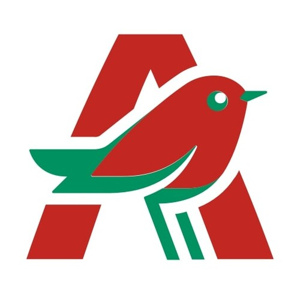

Salunox Prácticas
Plataforma SaaS sanitaria
- Desarrollo y mantenimiento de una plataforma SaaS sanitaria con Angular, PrimeNG y Laravel/PHP, realizando mejoras de interfaz, corrección de errores, pruebas funcionales y documentación técnica
Desarrollador Web Full-Stack
Formación y proyectos en desarrollo web, con experiencia profesional previa en atención al cliente, gestión operativa y trabajo por objetivos
Plataforma SaaS sanitaria
Ventas

AlcampoAtención al cliente
Instituto Fomento Ocupacional FOC
Centro FP Jorbalán
IES Manuel de Falla
 AL-LIO
AL-LIO